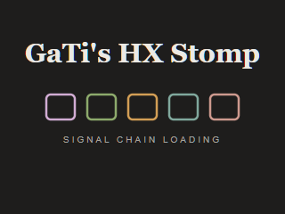

Setup instructions
Pick HX Edit's res folder. On Windows it is usually C:\Program Files (x86)\Line6\HX Edit\res; if your browser will not open a system folder, copy the folder somewhere else first. Only HX Edit's model pictures are read.
This copy of the page has no feature code, so it builds NAM A2 Lite and the boot screen only. The page published with each HXtra release has it.
Keep this stock file somewhere safe. You also need it for Recovery and to go back to the normal firmware later.
This step builds HXtra from the stock firmware file and gives you the modified firmware file to install.
You opened the page as a file on your computer, and browsers don't let a file page run the build. Open the online page instead: wisemandenny.github.io/hxtra. It does the same thing and still uploads nothing. (Steps 5 and 6 work either way.)
The picture the HX Stomp shows while it starts. Leave it as it is, or use your own.

The picture is made 320 x 240 here and stays on this computer. The dashed lines show where the loading bar crosses it and where the firmware paints over its corner to hide the boot text. How the bar looks over your picture can only be judged on the HX Stomp itself.
The first build downloads the build tools (about 15 MB) and takes 20–60 seconds, depending on the computer. Keep this tab open until it finishes.
Run HXtra from the unit's memory for one session. Nothing is written to the unit and no changes you make will save. Power cycling takes you back to stock.
Knobs can react slowly in a RAM run; an installed firmware doesn't do that.
Every HXtra feature was tried this way on a real HX Stomp. On Windows the browser may not see the HX Stomp, because Line 6's driver holds it.
The same way as a normal Line 6 update, with your new file.
HX_Stomp_v3.80.0_HXtra.hxfStuck on the boot screen after the install? Don't worry: follow Recovery.
The HX Stomp loads NAM captures from its User IR slots. This turns each .nam into a .wav that HX Edit can import there.
The .wav isn't a sound: it carries the capture's 1,871 numbers. Don't load it into a Cab or IR block; it's for the NAM A2 Lite block only!
Import the .wav files with HX Edit, then point the NAM A2 Lite block at them.
| Knob | What it does |
|---|---|
| Model | Which capture plays: the User IR slot (1–128) that holds it. A slot with a normal cab IR, or nothing, is silent. |
| Input | Level into the capture, −20 to +20 dB. 5.0 is the capture's own level. |
| Bass Mid Treble | Tone controls after the capture, ±12 dB each. 5.0 is flat. Bass is a low shelf at 150 Hz, Mid a band at Mid Freq, Treble a band at 2.5 kHz. |
| Mid Freq Q | Where Mid sits, 150 Hz to 3 kHz (650 Hz by default), and how wide it is: Q 0.7 (wide), 1.4 or 2.8 (narrow). |
| High Cut | A low-pass filter. 10.0 is off; turning it down lowers the cutoff, to 2 kHz at 0.0. |
| Output | Output level. 5.0 is unchanged; 10 is +12 dB. |
| Polarity | Normal or Inverted: Inverted flips the output's polarity (phase). |
If the HX Stomp stops at the boot screen, or you just want the normal firmware back.
HX_Stomp_v3.80.0_0x103966115.hxf).The firmware is Line 6's, so this project can't hand it out. This page takes your copy, changes a few of its fifteen parts (the main application, the DSP program and its graph library, the model list and the image store), and fixes every checksum. The bootloader is never changed. Please don't share the file you build.
No. The build runs inside this browser tab. The only downloads are the page itself and the build tools; your firmware and captures never leave the computer.
The build checks every checksum inside the firmware, then compares the result's fingerprint with the build the project tested. When they match, the page says Verified: your file is byte for byte the same as the tested one.
The command-line build (build.py) has a few more options: your own boot picture and boot text. See the README.
NAM captures come in several sizes. The HX Stomp's DSP can run only the A2 Lite size. Look for the A2 Lite version of the capture, or a multi-size .nam that includes it.
_HXtra.hxf).